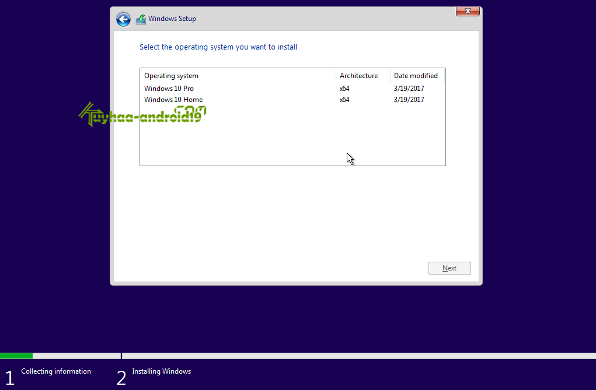
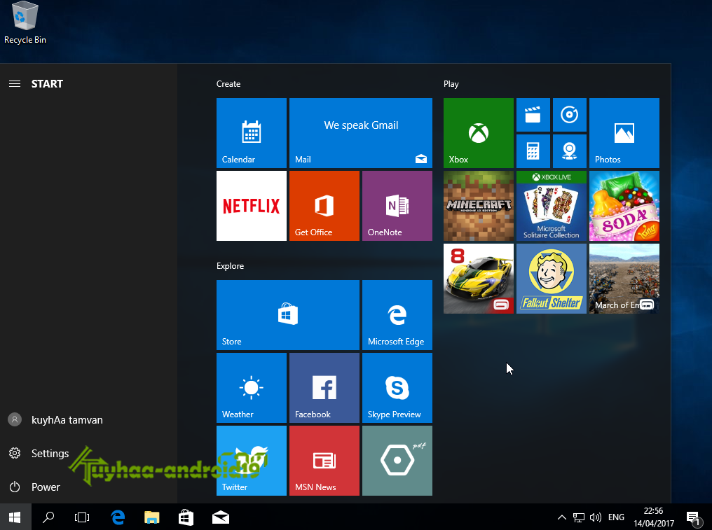

Top 5 Week
Windows 10 Version 1703 (Creator Update) RS2 MSDN
Untuk kita pengguna windows 10, tentu di pusingkan dengan nama nama aneh dari windows 10, berbeda dengan windows 8, windows 7 ataupun windows xp, yang kita mungkin tidak di pusingkan dengan nama nama dan mana versi windows 10 terbaru nya.
Sebelum kenal dengan Windows 10 Creator Update ini, sebelumnya kita kenal Windows 10, lalu windows 10 yang rillis July 2015 lalu, kemudian Windows 10 version 1511, lalu windows 10 anniversary update ( version 1607 ) dan sekarang hadir windows 10 Creator Update dengan version 1703.
Yups, saran saya temen temen sudah tidak perlu pada pusing, yang mana yang sebenarnya yang paling bagus dan yang mana yang paling baru. dari data yang disebutkan saya di atas, terlihat, yang membedakan adalah version. nah, jika anda menanyakan bagus mana dengan windows 10 anniversary update dengan windows 10 creator update ini.
saya jawab, bagus windows 10 Creator update ini. kenapa ? kita tidak usah di pusingkan dengan recokan nama, anniversary update ataupun creator update, tapi kita lihat Build Version nya.
Saya ambil contoh Windows 10 Anniversy Update itu build version nya 1607. nah untuk Windows 10 Creator update ini Build version nya 1703. jelas terlihat bahwa Windows 10 Creator update ini lah yang paling baru, karena build version nya sudah paling tinggi yakni 1703.
Tidak menutup kemungkinan nanti akan ada windows 10 jenis lain lagi penamaanya tapi tetap saja, itu hanya untuk membedakan build version nya( dari 1511, 1607 dan terakhir ini 1703. bukan versi windows 10 nya.
jadi anda tidak perlu pusing, Windows 10 sendiri tetap, yang umum di gunakan adalah windows 10 Home, Windows 10 Professional dan Windows 10 Enterprise. hanya seperti yang sudah saya bilang tadi. cermati di bagian build version nya.
gan, saya punya windows 10 yang sudah di install di laptop, biar tau cara liat build version nya gimana gan ? gampang=> silahkan tekan logo (Windows+R) di keyboard lalu ketik : winver
nanti akan muncul informasi version nya, kalo punya anda masih di bawah dari yang saya share terbaru ini, bisa di update saja melalui windows update, atau download baru ini kemudian install ulang.
dah, gamblang too. so, jangan di buat pusing dengan nama Anniversy Update ataupun Creator Update. cek saja build versionya.
nah, saya sekarang share Windows 10 Build 15063 Version 1703 (Creator Update) RS2 MSDN, ini benar benar asli dari microsoft, dan pasti aman sentosa. buat anda yang punya rencana install ulang windows 10, langsung saja download Windows 10 Build 15063 Version 1703 (Creator Update) RS2 MSDN ini dan install di komputer anda.
karena Windows 10 Build 15063 Version 1703 (Creator Update) RS2 MSDN ini sudah dengan fiture paling baru dan tentu termasuk fiture fiture sebelumnya.
Silahkkan kang, di download Windows 10 Build 15063 Version 1703 (Creator Update) RS2 MSDN, dan aktivasi pakai aktivator agar full version. atau bisa beli key original nya ke store ataupun toko yang bekerja sama dengan microsoft. enjoy.
Penjelasan kembali, disini saya membagikan Windows 10 Multiple Edition, Education dan Enterprise, di mana Windows 10 Multiple Edition itu terdiri dari Windows 10 Professional & Home Edition.

